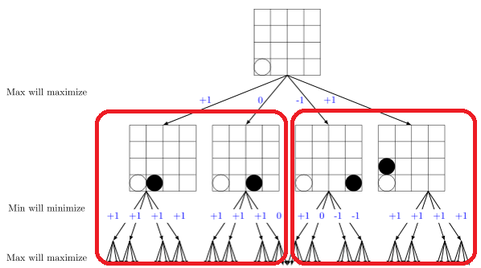

Parallelization
Our parallelization process can be broken down into 2 components - the embarrassingly parallel portion of dividing the minimax tree, and the communication of branches for subsequent evaluations for every processor. We'll address each separately:
Parallelizing a minimax game tree is an embarrassingly parallel problem. For each ply, one more depth of all possible moves must be evaluated. Our full game tree can be evenly divided if we break off the work at the first layer. Thus, each processor will handle a subset of depth (max-1) trees, or in other words, each processor will examine all the future moves based on fixing a subset of the immediate next move. From the perspective of each processor now, handling depth (max-1) trees, alpha-beta pruning can be done within itself starting with the minimization step.

Our actual implementation involved a broadcast method of the current game board followed by a calculation of indices so that each processor knew what portion of the moves it would be responsible for. Then, after computing the best answer for the branches each processor was responsible for, we used a reduction with the MPI.MAXLOC operation. This operation allowed us to get the maximum score computed as well as the processor that computed this score. The root node would receive the best score, and then communicate using send/recv the move that resulted in this score from the processor which it came from. This would be the optimal move from the entire game tree.
In principle, the heuristic computation could also be done by GPU but because of the nature of the various heuristics - only needing to check the immediate squares affected by the last move played, the actual heuristic computation is not as time consuming as simply computing over the space of possible game states.
Parallel search space reduction was conceptually harder to solve. As you saw, we used alpha-beta pruning within each branch calculation as that was solved serially. However, each processor is responsible for doing multiple branches - numLegalMoves/numProcessors, specifically. Then, after each branch, if synced properly, the processors could communicate and all use the same best alpha value for their next branch search. This would be equivalent to using alpha beta pruning after serially, fully expanding n-branches. Then reducing for the next set of n branches. Although this may not result in the most optimal pruning (as any pruning that could have been done between branches computed in parallel cannot be), there is still signficant speedups.
Implementation-wise, because our reduction is done at the top level, after each processor expands one branch, we synchronize all the processors and then use allreduce so that all the processors will receive the best alpha value amongst the first computation of all n processors. Extra care was taken so that each processor, even with the moves not completely evenly divided (some may have one more move), will call all reduce the minimum number of times so that the program would not go out of sync - resulting in mispruning and playing non-optimal moves.